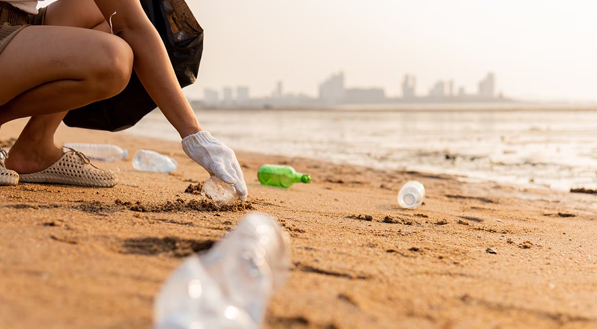
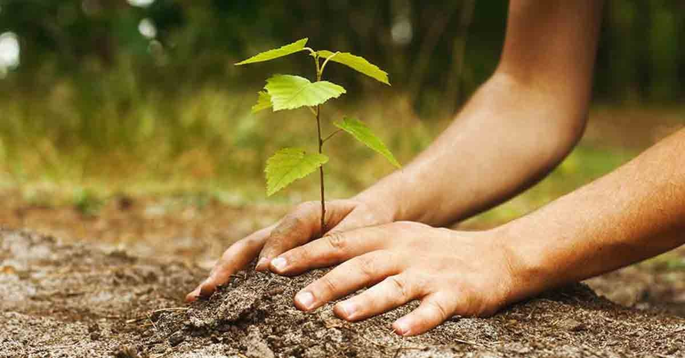
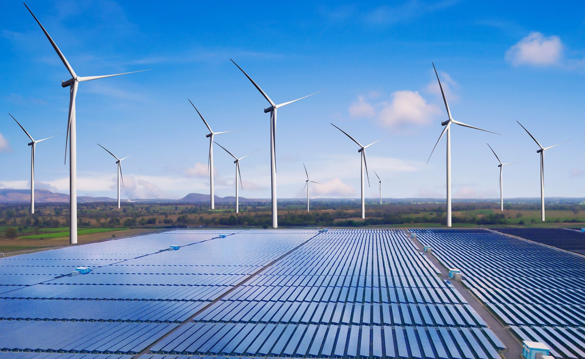

¿Quiénes Somos?
Somos una organización sin fines de lucro dedicada a la conservación del medio ambiente. Buscamos concientizar a la comunidad sobre la importancia de cuidar nuestros recursos naturales, reducir la contaminación y promover la sostenibilidad.
Actividades Realizadas
- Reforestación comunitaria: comunitaria: Plantación de 500 árboles en áreas afectadas por deforestación.
- Charlas educativas: Talleres en escuelas sobre reciclaje y uso eficiente de recursos.
- Campañas de limpieza: Retiro de desechos en playas y ríos locales.
Eventos Planificados
| Evento | Lugar | Fecha | Hora |
|---|---|---|---|
| Taller de Compostaje | Centro Comunitario | 15 de diciembre de 2024 | 10:00 AM |
| Charla sobre Cambio Climático | Auditorio Municipal | 20 de enero de 2025 | 4:00 PM |
| Jornada de Limpieza Costera | Playa Sur | 5 de febrero de 2025 | 8:00 AM |
Temas de Interés


